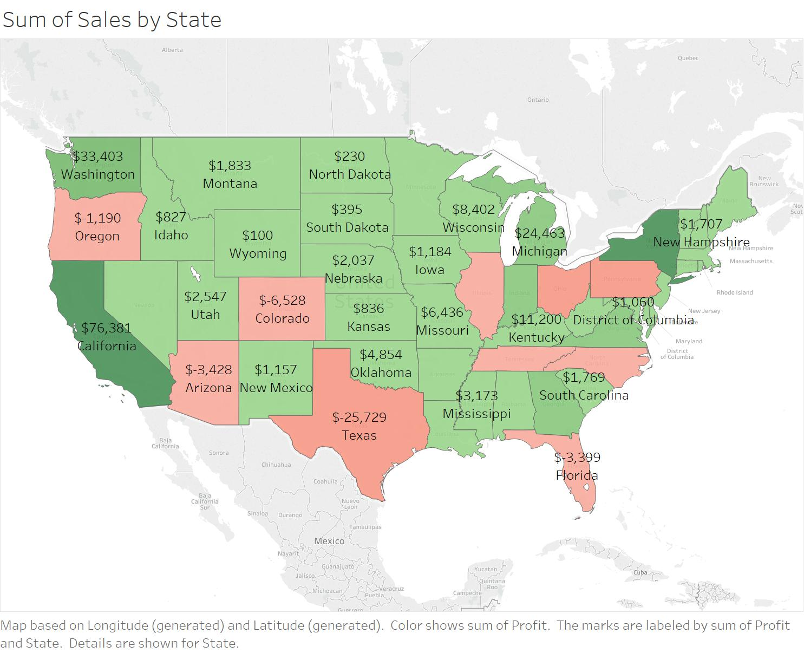
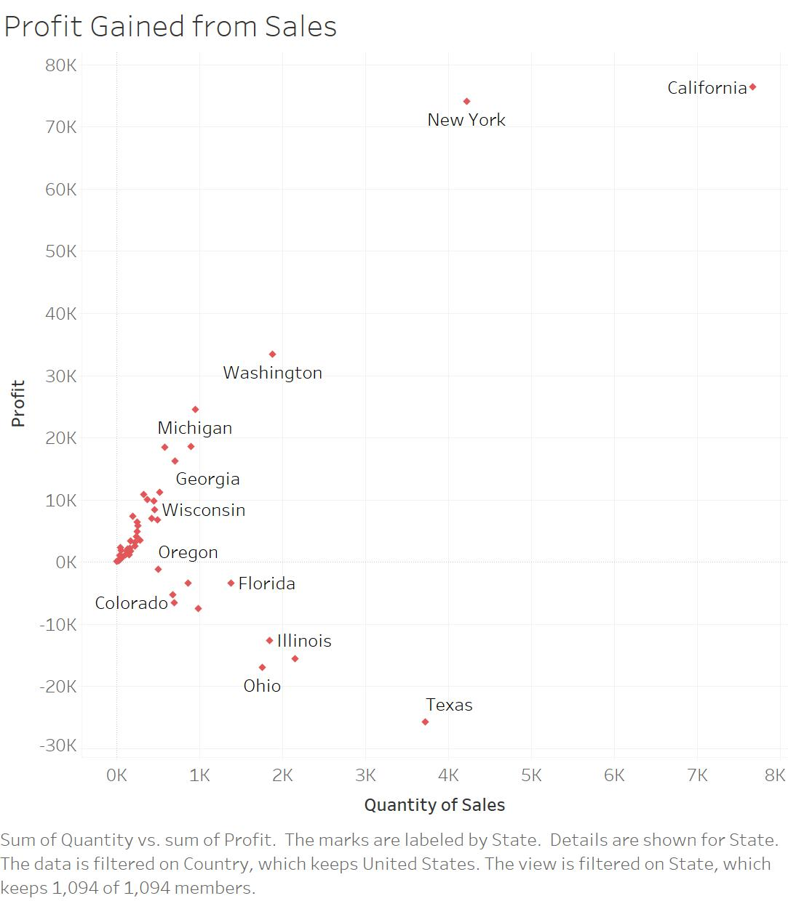
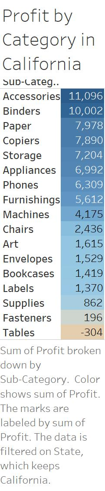
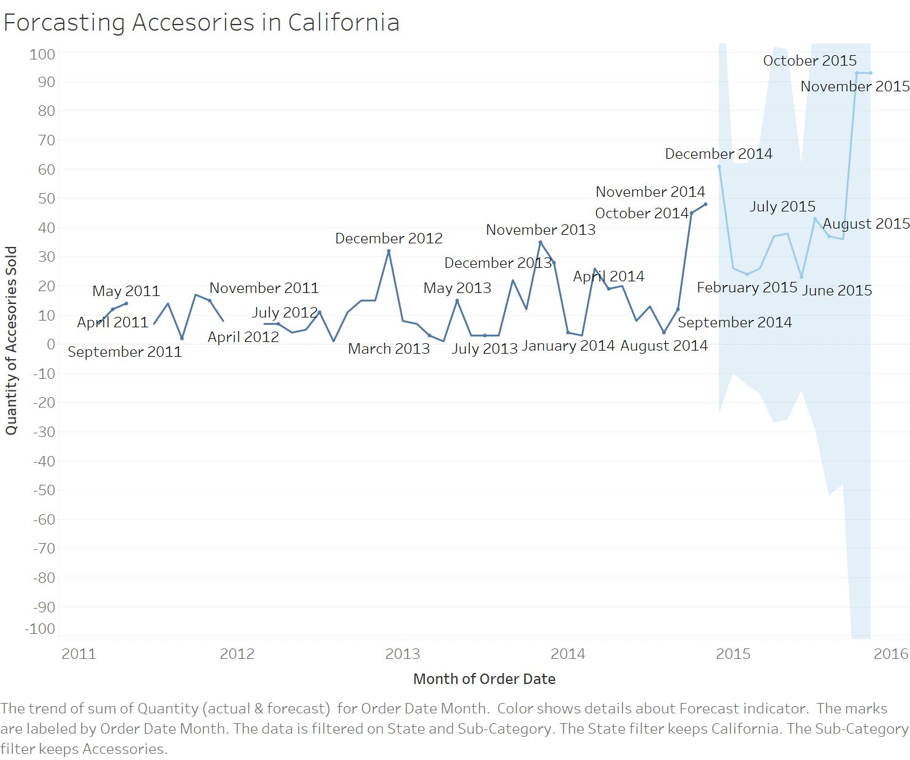

- Here I have made four graphs on Tableau to show my skills and answer various questions.

- The graph above shows the profit for the 50 states. Included in the labels are names of the state and the sum of profit for each state. Furthermore darker green indicates higher profit while the red incidates states that are losing money.

- The graph above shows the states that show the most profit based on the quantity of items that they sell. we can see that california not only sells the most products but also generates the most profit.

- The graph above shows the profits for each product category in the state of California. It is sorted in descending order with the most profitable products at the top of the list. We can see that in the state of California the most profitable product category are accessories.

- The graph above can be used to forcast sales of accesories in the state of California for the next year. We can see that if sales continue to follow the trends in the data we will sell 93 accesories in the state of California in November of 2015.